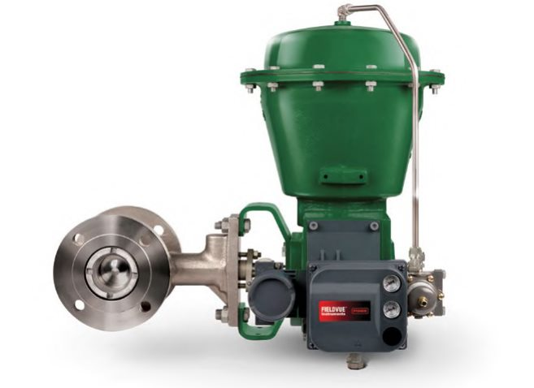

Meet the Rotary Control Valve

1 2- 1Spring-and-diaphragm actuator with positioner — same driving-force job as a sliding-stem actuator
- 2Rotary valve body — the closure member turns inside it instead of sliding
After Control Valve Handbook, 6th ed., Fig. 1.13 — cropped to the valve; unlabelled overview photo, markers ours. Component Index: cvh-cmp-rotary-valve-photo.